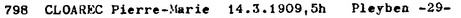

A problem in Cura data
Gauquelin data available on cura.free.fr are sometimes given in a format that generates a problem.This problem occurs in all files of series A, B, F, NH, and in files D9a, D9b, D9c.
For example, record n° 798 of file A1 is given like this in cura.free.fr :
YEA MON DAY PRO NUM COU H MN SEC TZ LAT LON COD CITY (...) 1909 3 14 C 798 F 4 50 40 0 48N 0 4W 6 29 PLEYBENThis means that birth time is
04:50:40 and that timezone offset = 0.
This can be compared with a scan of Gauquelins' LERRCP publication provided in cura.free.fr ; it shows that the same record was given in a different form :  This means that birth time is
05:00:00, and timezone offset is not provided.
Cura's value
04:50:40 is the result of a computation : legal time - timezone offset.
This is coherent with the notice found in cura.free.fr A1 page : Birthtime is converted to standard time, either for zone 0 (= GMT) or -1 (= CET) The way birth times are expressed in cura site adds information (the timezone offset). It's cool because the information can be directly used to compute birth chart.
But expressing times this way should be avoided because two distinct informations are mixed in one field :
- The legal time, as it can be read in civil registries.
- The timezone offset.
Doing like that generates a loss of information.
If the data is not correct, it is not possible to answer to the question : does it come from an error on legal time or on timezone offset computation ?
Format used in g5
In g5 database, dates are stored using 2 distinct fields :-
One field to store date and time if present. It respects ISO 8601 format and can be one of :
-YYYY-MM-DD HH:MMif time is known.
-YYYY-MM-DDif time is not known. -
One field to store timezone offset. The format can be :
-sHH:MMwhen precision of a minute is sufficient.
-sHH:MM:SSwhen precision of a second is needed.
Expressing timezone offset
Notations :
LT = legal time
TZO = timezone offset
UT = universal time
TZO = timezone offset
UT = universal time
A surprising feature of historical data is that neither Gauquelin nor Müller respect the ISO 8601 definition of timezone offset. They always indicate the opposite value. The same problem occurs in the 2 books used to compute timezone offset (see below).
| Meaning for Gauquelin and Müller |
|---|
LT + TZO = UT
If LT is known, add the TZO to obtain UT |
| Meaning for g5 |
UT + TZO = LT
if UT is known, add TZO to obtain LT This is equivalent to LT - TZO = UT
If LT is known, substract the TZO to obtain UT |
Gauquelin gives TZO = 6h
g5 gives TZO = -6h
To find UT :
From Gauquelin value : UT = 07:00 + 6h = 13:00
From g5 value : UT = 07:00 - (-6h) = 13:00
The results are equivalent.
This is not a blocking problem as it's finally just a matter of convention.
Timezone offset computation
This is a delicate and important problem.Important because TZO is necessary to compute a chart, and delicate because information sources are sometimes contradictory.
The reference is the "Olson database", used by operating systems and programming languages (https://www.iana.org/time-zones).
This handles simple cases when the offset is defined for a whole time zone at a given time.
For these cases, it's possible to compute the offset without ambiguity :
(date, time zone identifier) --> offset.
But things are sometimes more complex :
- In the 19th century, local time was used, so longitude is also needed for the computation.
- In some periods of history, the offset depends on political events, and precise local conditions need to be known. This happens for example in France or Italy during world war 2.
To handle these cases, I have 2 books
- FG : "Problèmes de l'heure résolus pour le monde entier" (Françoise Gauquelin, Guy Trédaniel éditeur), 1991
- THM : "Traité de l'heure dans le monde", (Gabriel, Guy Trédaniel éditeur), 5th edition, 1990
g5 integration
Time zone computation is a weak point of current implementation :- My understanding of Olson database is too superficial to be sure of its meaning.
- When 2 sources contradict, each case should be solved in a documented way.
As a consequence, offset computation in g5 is partial and should not be considered as reliable yet.
Persons have 3 fields to express a date and its timezone :
-
birth.date : the legal time
-
birth.date-ut : UT
-
birth.tzo : the timezone offset
With (see above) :
date-ut + tzo = date
Examples of contradictions
-
For Italy, both books say that offset is 1h for the whole country since 1893-11-01.
Olson database says 1901-12-13 -
For France or Italy, FG says that "local time" is local mean time.
THM talks about local real time.
The difference between real and mean local time is the equation of time.